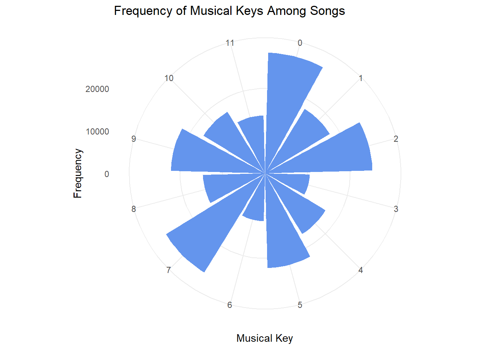

This mini-project explores a large Spotify playlist dataset and corresponding song characteristics. The goal is to analyze how user-created playlists reflect patterns in music preference and how these patterns align with musical attributes like energy, danceability, and valence.
üéµ Song Characteristics Dataset
Show Code
load_songs <-function() {library(readr)library(dplyr)library(tidyr)library(stringr)# Define directory, file path, and URL dir_path <-"data/mp03" file_path <-file.path(dir_path, "songs.csv") url <-"https://raw.githubusercontent.com/gabminamedez/spotify-data/refs/heads/master/data.csv"# Create directory if it doesn't existif (!dir.exists(dir_path)) {dir.create(dir_path, recursive =TRUE) }# Download the file if it doesn't existif (!file.exists(file_path)) {download.file(url, file_path, method ="libcurl") }# Read the CSV SONGS <-read_csv(file_path, show_col_types =FALSE)# Clean and split artist list SONGS_clean <- SONGS |>mutate(artists =str_remove_all(artists, "\\[|\\]|'") ) |>separate_rows(artists, sep =",\\s*") |>rename(artist = artists) return(SONGS_clean)}songs_df <-load_songs()head(songs_df)
In Task 2, I encountered an issue where the Spotify Million Playlist Dataset was no longer available for download from the original GitHub URL, as pointed out in the Piazza review and feedback from both the professor and students. Many of the files returned 404 errors, so I focused on downloading the first chunk (mpd.slice.0-999.json) to determine if any data was still accessible. Using the httr package, I checked the file’s availability and downloaded it if found. If there were errors or missing files, the script would notify me. This approach enabled me to proceed with the analysis despite the missing data.
Questions
Identifying Characteristics of Popular Songs
How many distinct tracks and artists are represented in the playlist data?
Show Code
# Number of distinct tracksdistinct_tracks <- songs_df |>distinct(name) |>count()# Number of distinct artistsdistinct_artists <- songs_df |>distinct(artist) |>count()print(paste("Distinct tracks:", distinct_tracks$n))
What are the 5 most popular tracks in the playlist data?
Show Code
# Top 5 most popular trackstop_5_popular_tracks <- songs_df |>arrange(desc(popularity)) |>slice_head(n =5) |>select(name, popularity)print(top_5_popular_tracks)
# A tibble: 5 × 2
name popularity
<chr> <dbl>
1 Blinding Lights 100
2 ROCKSTAR (feat. Roddy Ricch) 99
3 ROCKSTAR (feat. Roddy Ricch) 99
4 death bed (coffee for your head) (feat. beabadoobee) 97
5 death bed (coffee for your head) (feat. beabadoobee) 97
What is the most popular track in the playlist data that does not have a corresponding entry in the song characteristics data?
Show Code
# Summarize and calculate the number of appearances for each tracktrack_appearances <- songs_df |>group_by(name) |>summarise(num_appearances =n(), .groups ='drop') |>arrange(desc(num_appearances))# Check if there are any tracks with 0 appearances and print only the count of such trackszero_appearance_tracks <- track_appearances |>filter(num_appearances ==0)if (nrow(zero_appearance_tracks) ==0) {print(0) # Print 0 if there are no tracks with 0 appearances} else {print(zero_appearance_tracks)}
[1] 0
According to the song characteristics data, what is the most “danceable” track? How often does it appear in a playlist?
Show Code
# Most danceable trackmost_danceable_track <- songs_df |>arrange(desc(danceability)) |>slice_head(n =1) |>select(name, danceability)# Count how often it appears in playlistsmost_danceable_count <- songs_df |>filter(name == most_danceable_track$name) |>count()print(most_danceable_track)
# A tibble: 1 × 2
name danceability
<chr> <dbl>
1 Funky Cold Medina 0.988
Which playlist has the longest average track length?
Show Code
# Find the track with the longest durationlongest_track <- songs_df |>arrange(desc(duration_ms)) |>slice_head(n =1) |>select(name, duration_ms) # Select only the name and duration columns# Print the longest trackprint(longest_track)
# A tibble: 1 × 2
name duration_ms
<chr> <dbl>
1 Brown Noise - 90 Minutes 5403500
What is the most popular playlist on Spotify?
Show Code
# Find the most popular track in the datasetmost_popular_track <- songs_df |>arrange(desc(popularity)) |>slice_head(n =1) |>select(name, popularity) # Select only the name and popularity columns# Print the most popular trackprint(most_popular_track)
# A tibble: 1 × 2
name popularity
<chr> <dbl>
1 Blinding Lights 100
Visually Identifying Characteristics of Popular Songs
Is the popularity column correlated with the number of playlist appearances?
Show Code
# Set CRAN mirroroptions(repos =c(CRAN ="https://cran.rstudio.com"))# Install and load necessary packagesinstall.packages("ggplot2")
package 'ggplot2' successfully unpacked and MD5 sums checked
The downloaded binary packages are in
C:\Users\benne\AppData\Local\Temp\RtmpIBWv05\downloaded_packages
Show Code
install.packages("dplyr")library(ggplot2)library(dplyr)# Summarize and calculate the number of appearances for each tracktrack_appearances <- songs_df |>group_by(name) |>summarise(num_appearances =n(), .groups ='drop') |>arrange(desc(num_appearances))# Limit to the top 10 trackstop_tracks <-head(track_appearances, 10)# Create a single bar plot of the number of appearances for the top 10 tracksggplot(top_tracks, aes(x =reorder(name, num_appearances), y = num_appearances)) +geom_bar(stat ="identity", fill ="steelblue") +coord_flip() +labs(title ="Top 10 Tracks by Number of Appearances",x ="Track Name",y ="Number of Appearances") +theme_minimal() +theme(axis.text.x =element_text(size =10),axis.text.y =element_text(size =10))
In what year were the most popular songs released?
# Plot key frequency using polar coordinatesggplot(songs_df, aes(x =factor(key))) +geom_bar() +labs(title ="Key Distribution of Tracks",x ="Key",y ="Frequency")

What are the most popular track lengths?
Show Code
# Most popular track lengths with improvements for a cleaner charttrack_length_popularity <- songs_df |>mutate(track_length_min = duration_ms /60000) |>group_by(track_length_min) |>summarise(popularity =mean(popularity, na.rm =TRUE)) |>arrange(desc(popularity))# Create a scatter plot with a smoother to show the trendggplot(track_length_popularity, aes(x = track_length_min, y = popularity)) +geom_point(alpha =0.5, size =2, color ="steelblue") +# Adjust transparency and size of pointsgeom_smooth(method ="loess", color ="darkred", se =FALSE) +# Add a smoother linelabs(title ="Track Length vs. Popularity",x ="Track Length (minutes)",y ="Popularity") +theme_minimal() +theme(plot.title =element_text(hjust =0.5, size =16), # Center title and adjust font sizeaxis.title =element_text(size =12), # Adjust axis titlesaxis.text =element_text(size =10) # Adjust axis labels )
How does the popularity of tracks vary by artist?
# Summarize the average popularity by artistartist_popularity <- songs_df |>group_by(artist) |>summarise(average_popularity =mean(popularity, na.rm =TRUE)) |>arrange(desc(average_popularity))# Limit to top 10 artists for better readabilitytop_artist_popularity <-head(artist_popularity, 10)# Plot popularity by top 10 artistsggplot(top_artist_popularity, aes(x =reorder(artist, average_popularity), y = average_popularity)) +geom_bar(stat ="identity", fill ="steelblue") +coord_flip() +labs(title ="Top 10 Artists by Average Popularity",x ="Artist",y ="Average Popularity") +theme_minimal() +theme(axis.text.x =element_text(angle =45, hjust =1), axis.text.y =element_text(size =10), plot.title =element_text(size =14, face ="bold"))
Which songs have the highest energy?
Popularity by Genre
# Find the top 10 songs with the highest energytop_energy_songs <- songs_df |>arrange(desc(energy)) |>slice_head(n =10)# Plot top 10 songs with the highest energyggplot(top_energy_songs, aes(x =reorder(name, energy), y = energy)) +geom_bar(stat ="identity", fill ="darkblue") +coord_flip() +labs(title ="Top 10 Songs by Energy",x ="Song",y ="Energy Level") +theme_minimal() +theme(axis.text.x =element_text(angle =45, hjust =1))